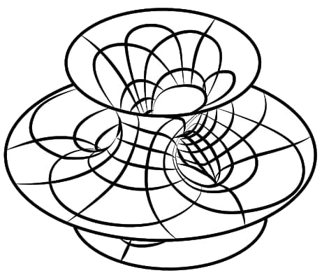
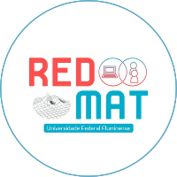

CURVAS PARAMÉTRICAS
Introdução a Curvas Paramétricas
ORIENTAÇÕES INICIAIS
Este texto sobre curvas paramétricas pretende dar uma introdução bem básica e intuitiva sobre a matéria, evitando, sempre que possível, formalismos matemáticos.
Recomendamos que você tente ler antes da aula presencial correspondente pelo menos as três primeiras seções. Isto preparará você para encarar uma abordagem mais formal dos conteúdos. Vai dar certo!!
Nunca se esqueça de que o GeoGebra é um grande aliado desta matéria. Abuse dele!!! Na seção Como esboçar curvas com o Geogebra você encontrará algumas orientações.
Você não está sozinho na sua aprendizagem. Caso tiver problemas para entender a matéria ou com o GeoGebra, entre em contato com qualquer professor do GMA ou com algum monitor da disciplina.
INSTRUÇÕES DE USO
Navegue pelo menu lateral ou com as setinhas da parte de baixo de cada seção (todos os dispositivos) ou com as setinhas da parte superior direita (somente para desktop).
Em alguns momentos do texto aparecerão links. Fique ligado/a! As vezes esse link é uma dica ou uma orientação extra!
Se recomenda fazer as leituras e atividades na ordem proposta. Evite pular etapas.
Só destacar que REDMAT é um jovem projeto de pesquisa, ensino e extensão da UFF e que ninguém monetiza com os recursos desenvolvidos. REDMAT é uma plataforma para os alunos atuantes aprenderem práticas docentes, divulgação da ciência, comunicação, mídia, programação, etc. Tudo sempre direcionado a melhorar o processo de aprendizagem de nossos alunos de graduação e da rede básica. Tentando, também, inspirar futuros professores na preparação de seus materiais de ensino.
AVALIAÇÃO DO RECURSO
O projeto REDMAT está testando novas tecnologias de ensino a cada semestre, por isso é importante que você diga para a gente se este recurso é realmente útil para seus estudos. Se não, não se preocupe! Conte para nós por que você não achou interessante e de qual tipo de recurso você está sentindo mais falta. Seus comentários nortearão nossos futuros trabalhos!
Link para o formulário. Demora apenas 2 minutos!!
AUTORIA
Recurso Educacional Aberto produzido pela professora Begoña Alarcón Cotillas, dentro do marco do projeto REDMAT, para a disciplina Cálculo II do Departamento de Matemática Aplicada da Universidade Federal Fluminense.
Artes e Design: Gabriel Sena Gomes e Celiny Borges
Para mais informações sobre o projeto, clique aqui
|  |  |